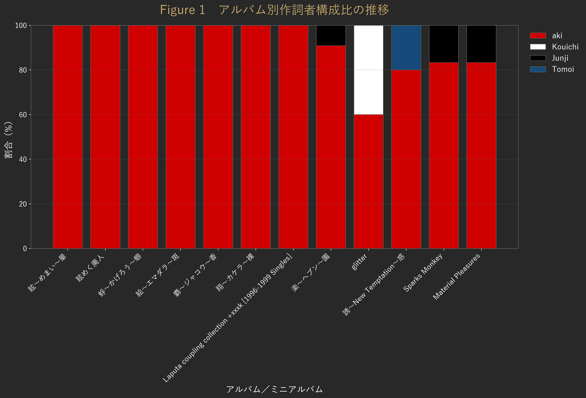
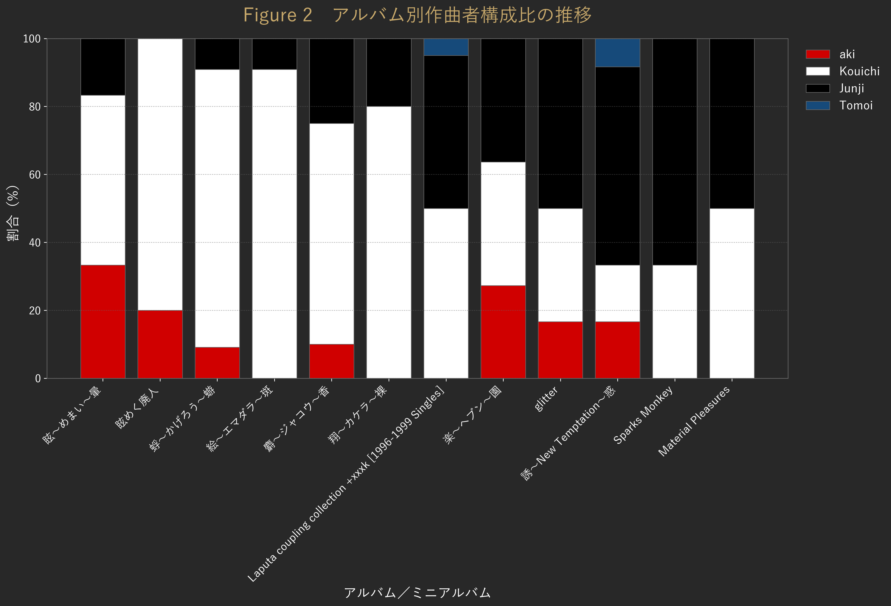
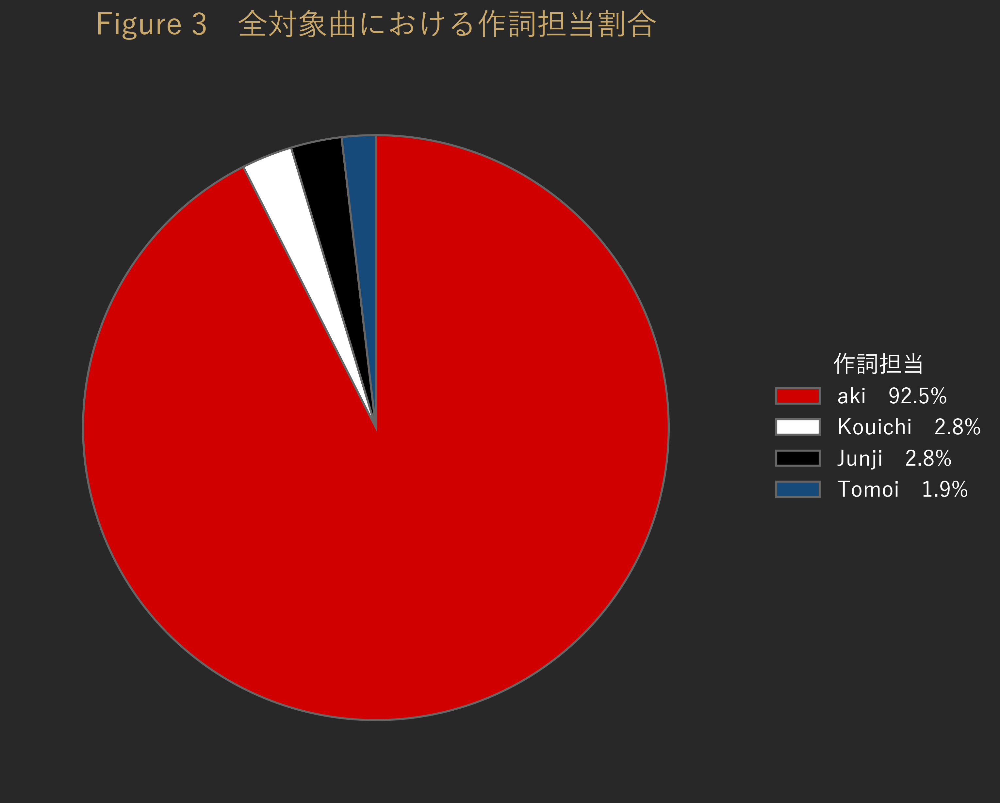
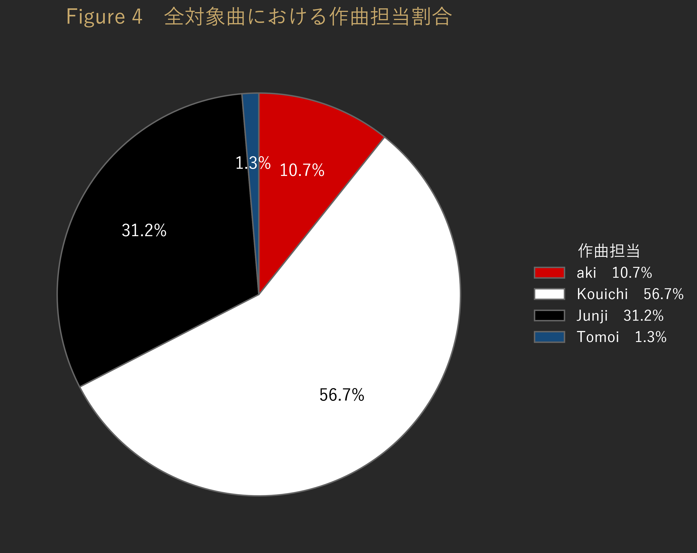
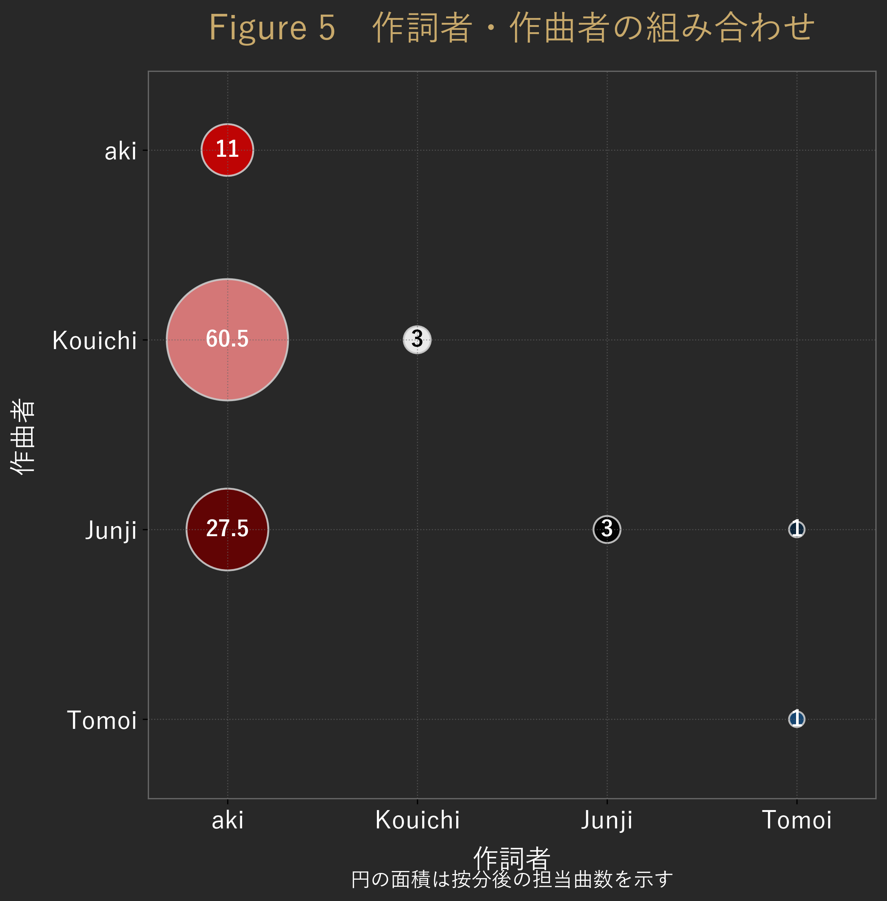

Laputaの作詞・作曲者の変遷
Laputaの楽曲について、誰が作詞・作曲を担当してきたのかを、 作品ごとのクレジットから整理した。
Laputaはメンバー4人が演奏だけでなく、自分たちで全曲を作詞・作曲し楽曲を作っていたバンドである。 そこで今回は、アルバムごとの作詞・作曲者の変化と、 活動期間全体で見た担当割合を数字にしてみた。
対象としたのは、1995年の『眩～めまい～暈』以降のLaputaの楽曲である。 ベスト盤および『私が消える』収録曲は対象外とし、 アルバム、ミニアルバム、シングルに収録された楽曲を整理した。
1．アルバムごとの作詞者の変化
まず、アルバム・ミニアルバムごとに作詞者の割合を見てみる（Figure 1）。
初期の作品では、作詞のほぼすべてをakiが担当している。 『眩～めまい～暈』から『翔～カケラ～裸』までを見ると、 作詞者としてakiが占める割合は非常に高く、作品によっては全曲がakiによる作詞である。
その後、『楽～ヘブン～園』ではKouichi、Junji、Tomoiによる作詞も見られるようになり、 後期の作品では複数のメンバーが作詞に参加している。
ただし、活動期間全体で見ると、作詞はakiが中心であったことに変わりはない。

Table 1 対象アルバムにおける収録曲数と作詞有効曲数
| No. | アルバム／ミニアルバム | 収録曲数 | 歌詞無し曲 | 作詞有効曲数 |
|---|---|---|---|---|
| 1 | 眩～めまい～暈 | 9 | 0 | 9 |
| 2 | 眩めく廃人 | 5 | 0 | 5 |
| 3 | 蜉～かげろう～蝣 | 11 | 1 | 10 |
| 4 | 絵～エマダラ～斑 | 11 | 0 | 11 |
| 5 | 麝～ジャコウ～香 | 10 | 0 | 10 |
| 6 | 翔～カケラ～裸 | 10 | 0 | 10 |
| 7 | Laputa coupling collection +xxxk [1996–1999 Singles] | 10 | 1 | 9 |
| 8 | 楽～ヘブン～園 | 11 | 0 | 11 |
| 9 | glitter | 6 | 1 | 5 |
| 10 | 誘～New Temptation～惑 | 12 | 2 | 10 |
| 11 | Sparks Monkey | 6 | 0 | 6 |
| 12 | Material Pleasures | 6 | 0 | 6 |
| 合計 | 107 | 5 | 102 |
2．アルバムごとの作曲者の変化
作詞とは少し違い、作曲についてはメンバー間の割合に変化が見られる（Figure 2）。
初期の『眩～めまい～暈』ではKouichiの作曲割合が最も高く、 続く『眩めく廃人』から『翔～カケラ～裸』においてもKouichiが中心となっている。
作曲については、Kouichiの担当割合が全体で最も高く、次いでJunjiが続いた。 一方、akiも初期作品を含めて一定数の作曲を担当しており、 作品ごとに担当者の構成には変化がみられた。

3．全対象曲で見る作詞担当
次に、アルバムだけでなくシングルも含め、対象となる楽曲全体を見てみる。
今回の全曲分析では112曲を対象とし、そのうち歌詞が確認できない5曲を除いた 107曲について作詞者を集計した。
結果は、aki 92.5％、Junji 2.8％、Kouichi 2.8％、Tomoi 1.9％となった（Figure 3）。
この数字からも、Laputaの作詞においてakiが中心的な役割を担っていたことが分かる。
これは単に「akiが一番多く詞を書いた」というだけではなく、 Laputaの楽曲を作る際に、akiが継続して言葉を担当してきたことを示している。

4．全対象曲で見る作曲担当
作曲については、作詞とはかなり違った結果となった（Figure 4）。
112曲を集計すると、Kouichi 56.7％、Junji 31.2％、aki 10.7％、Tomoi 1.3％となった。
最も大きな割合を占めるのはKouichiであり、 Laputaの楽曲制作においてKouichiが多くの曲の作曲を担当していたことが分かる。
一方でJunjiも31.2％を占めており、作曲面では大きな存在である。
aki自身も作曲を10.7%担当しており、Tomoiによる作曲も含め、 メンバーそれぞれが楽曲制作に参加している。

5．作詞者と作曲者の組み合わせ
最後に、誰が曲を作り、誰が詞を書いたのかを組み合わせて見てみた（Figure 5）。
最も多かったのは、Kouichi作曲 × aki作詞の組み合わせで、60.5曲相当となった。 次いでJunji作曲 × aki作詞が27.5曲相当であり、この2つの組み合わせが全体の大きな部分を占めている。
アルバムごとに見ると、初期はKouichiの作曲割合が高く、 後期にはJunjiの割合が高い作品がみられた（Figure 2）。
このように見ていくと、Laputaの楽曲には「それぞれのメンバーが曲を作り、 akiが詞を書く」という組み合わせが多く存在していたことが分かる。
これは単純な役割分担という意味ではない。 4人それぞれが演奏にも参加し、詞や曲を持ち寄りながら、 一つのLaputaの音楽を作っていたと考える方が自然である。

6．この数字から見えてくること
今回の集計で一番はっきりしたのは、 作詞と作曲ではメンバーの関わり方がかなり違っていたことである。
作詞はakiが長い期間にわたって中心となっており、 作曲はKouichiを中心にJunji、aki、Tomoiが関わっていた。
そして、作詞者と作曲者の組み合わせを見ると、 akiの詞にKouichiやJunjiが曲を付ける形が多く見られる。
これは、Laputaの楽曲が一人のメンバーの作品として完結するのではなく、 それぞれが持ち寄ったものを4人で音にしていくバンドだったことともつながっている。
Laputaについて語るとき、その独特な音楽性と世界観はよく取り上げられる。 その背景にある「誰がどの曲を作ったのか」を数字で追ってみると、 また少し違ったLaputaの姿が見えてくる。
Table 2 全曲分析の対象作品
| No. | 発売日 | 種別 | 作品名 | 収録曲数 | 全曲分析採用曲数 |
|---|---|---|---|---|---|
| 1 | 1995-02-24 | Album | 眩～めまい～暈 | 9 | 9 |
| 2 | 1996-02-25 | Mini Album | 眩めく廃人 | 5 | 4 |
| 3 | 1996-10-23 | Album | 蜉～かげろう～蝣 | 11 | 11 |
| 4 | 1997-06-25 | Album | 絵～エマダラ～斑 | 11 | 11 |
| 5 | 1998-03-18 | Album | 麝～ジャコウ～香 | 10 | 10 |
| 6 | 1999-06-09 | Album | 翔～カケラ～裸 | 10 | 10 |
| 7 | 2000-02-23 | Album | Laputa coupling collection +xxxk [1996–1999 Singles] | 10 | 10 |
| 8 | 2000-10-25 | Maxi Single | Shape～in the shape of wing～ | 3 | 2 |
| 9 | 2001-02-21 | Maxi Single | Silent on-looker | 2 | 1 |
| 10 | 2001-03-16 | Album | 楽～ヘブン～園 | 11 | 11 |
| 11 | 2002-03-21 | Mini Album | glitter | 6 | 6 |
| 12 | 2002-06-21 | Maxi Single | 深海/Brand-new color | 2 | 2 |
| 13 | 2002-07-24 | Album | 誘～New Temptation～惑 | 12 | 12 |
| 14 | 2003-04-23 | Mini Album | Sparks Monkey | 6 | 6 |
| 15 | 2004-03-17 | Mini Album | Material Pleasures | 6 | 6 |
| 16 | 2025-08-29 | Single | Without your Love | 1 | 1 |
| 合計 | 115 | 112 |
注：『私が消える』およびベスト盤収録曲は対象外とした。 複数作品に重複して収録された同一楽曲は、全曲分析では1曲として計上した。 ただし「Insatiable」は『眩～めまい～暈』収録版と『眩めく廃人』収録版で歌詞が異なるため、 それぞれ独立した楽曲として計上した。 「舌」はシングル「硝子の肖像」収録版と 『Laputa coupling collection +xxxk [1996–1999 Singles]』収録版で 編曲および歌詞表記に差異があるものの、音源として同一曲であるため1曲として計上した。 また「Vertigo」は『眩～めまい～暈』および『眩めく廃人』の両作品に収録されているが、 同一楽曲であるため、全曲分析では1曲として計上した。 Figure 1およびFigure 2では、各アルバムにおける作詞・作曲者構成を見るため、 同一楽曲が複数の作品に収録されている場合も、それぞれの作品の収録曲として計上している。
データ出典・分析方法
本分析では、Laputaの各作品の収録曲および作詞・作曲クレジットをもとに、 Project LPTで作成した楽曲データベースを使用した。
- 対象：Laputaのみ。1995年2月24日『眩～めまい～暈』以降。
- Figure 1・2：アルバム・ミニアルバムを対象。
- Figure 3・4・5：対象期間内のLaputa全楽曲を対象。
- 共作：クレジットされた担当者間で均等按分。
- 作詞割合：作詞者情報がない楽曲は分母から除外。
- Figure 5：作詞者×作曲者の組み合わせを、按分後の担当曲数で表示。
参考文献：
1. 荒川れいこ『カラーズ』角川書店、1999年、p.85
（「aki of Laputa」インタビュー）。
2. 『M GAZETTE Vol.25』 アリノス出版、1999年7月号、p.30
（Laputaメンバーが語る‼︎ 全アルバム解説）。